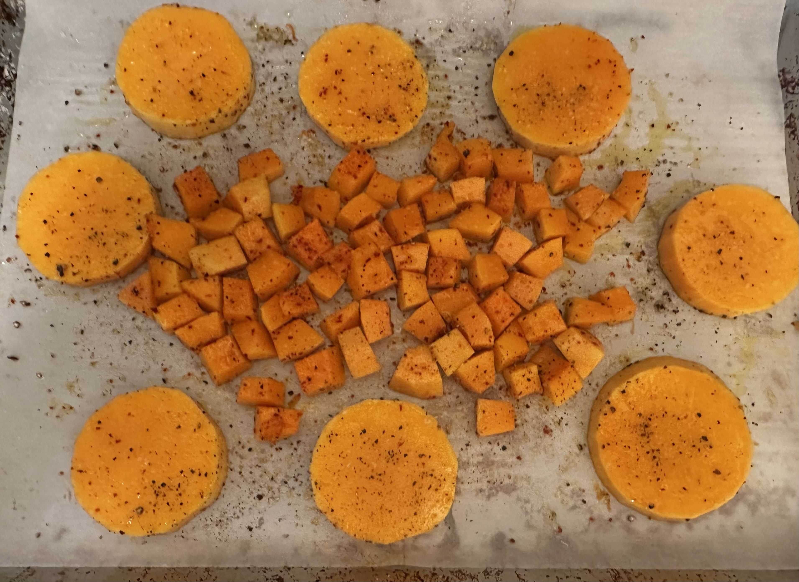

Roasted Butternut Squash
2025-02-04 cook recipe vegetarian
Ingredients
- 1 Butternut squash
- Olive oil to lightly coat
- large pinch salt
- pepper to taste
Optional Ingredients
- large pinch Gochujaru
- pinch cinnamon
- zest & juice of 1 lemon
- pinch paprika (your choice of sweet, hot, or smoked)
Steps
- Preheat the oven to 450°F.
- Peel the squash, cut off top/handle and bottom/root.
- Slice the remaining top section into about 1/2" rounds
- Once you hit the bottom section where the pulp/seeds are, remove them, and then dice this section into about 1/2" cubes
- line a sheet pan with parchment (mostly for helping cleanup)
- place squash on sheet pan, arranging the cubes in the middle and surrounding them with the rounds
- drizzle oil over the squash
- add the large pinch of salt
- grind pepper over the squash
- for any of the optional ingredients, choose one or two and add them on top. (Lemon juice/zest go on at the end, not here)
- thouroughly mix/coat the squash with the oil, salt, pepper, and additional ingredients on both sides
- bake for about 15 minutes
- flip rounds and flip/mix cubes as best you can
- bake for another 15 minutes
- remove from oven, and if you're adding lemon juice/zest, now's the time to add it to the squash.

The rounds are nicely versatile, either making a patty that fits well into an english muffin, a nice side, or can be cut into cubes for a salad. The cubes themselves I normally refrigerate and add to salads over the next couple of days. Adding them to rice or quinoa is also nice.